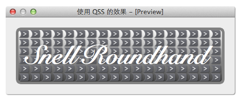
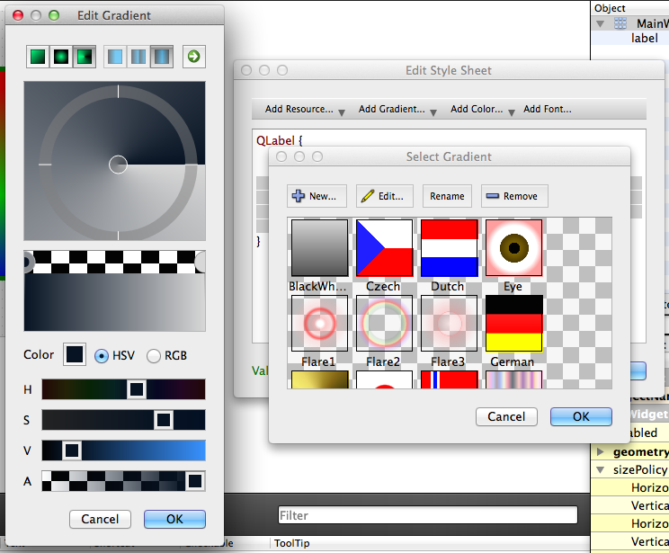

如果你会 CSS，那么 QSS 对你来说将会非常简单，QSS 的语法和 CSS 的愈发非常相似，但也有些不同，有些 CSS 的东西在 QSS 里被去掉了，QSS 也加了些自己特有的东西，不过大多数还是差不多的，下面以修改 QLabel 的样式为例，学习 QSS 的基础语法。
1 | QLabel { |
下图是上面 QSS 的效果图:

下面具体介绍一下 QSS 的基础语法:
设置字体用
font, 语法为：1
2
3
4font: [font-style] [font-variant] [font-weight] [font-size] [font-family]
/* 按顺序设置，可以忽略其中某些值，例如：*/
font: italic bold 12px arial, sans-serif;设置字体用
font-style,font-size,font-weight,font-family（和 CSS 一样，如果字体名字有空格则用双引号引起来，多个字体名字间用逗号分隔，如果第一个字体找不到则用第二个，第二个找不到则用第三个，依此类推）设置文本颜色用
color设置背景颜色用
background-color设置背景使用
background，可以设置如下属性：background-color
background-position
background-sizebackground-repeat
background-origin
background-clip
background-attachment
background-image
1
2/* 可以忽略其中某些值，例如：*/
background: lightgray url(:/resources/horizontal-add-line.png);url 中的路径可以是：
- 资源文件的路径（
:/开头） - 绝对路径
- 相对于可执行文件的相对路径
- 资源文件的路径（
设置背景图片用
background-image（先绘制背景色，然后再绘制背景图片，如果背景图片是半透明的就可以看到背景色了），默认水平和垂直重复平铺满整个 widget，同时一起设置的还可以有background-repeat、background-position、background-attachment- background-repeat，可选的值有：
- repeat-x：水平方向重复
- repeat-y：垂直方向重复
- no-repeat：不重复
- background-position，可选的值有：
- top left
- top center
- top right
- center left
- center center
- center right
- bottom left
- bottom center
- bottom right
xpos ypos
- background-attachment，可选的值有：
- scroll：背景随滚动条滚动
- fixed：背景不随滚动条滚动
- background-repeat，可选的值有：
设置背景还可以用
border-image，请参考 Border Image 一节设置边框用
border-width,border-style,border-color设置边框用
border，语法为：1
2
3
4border: border-width border-style border-color
/* 例如：*/
border: 1px solid gray;设置圆角边框用
border-radius，但是如果给定的半径大于对应边的一半，圆角就没有效果了，在 CSS 里没有这个问题支持渐变 gradient:
qlineargradient、qradialgradient、qconicalgradient，渐变的坐标不是用像素表示，而是把渐变的坐标的最小值定义为 0，最大值定义为 1，这种技术又叫Normalization，通俗点说就是用比例表示，开始处用 0 表示，结束处用 1 表示，不管渐变的范围是 200px 还是 500px，按比例都能计算出实际的像素坐标，这样做的好处是，不需要关心渐变的像素坐标范围的具体数值。如果不用Normalization技术，widget 的大小一变化，就需要修改 QSS 里的坐标值。1
2
3
4
5
6
7
8
9
10
11/*
x1: 0, y1: 0，渐变的开始位置，为 border rectangle 的左上角（请参考盒子模型）
x2: 0, y2: 1，渐变的开始位置，为 border rectangle 的左下角
stop: 0.1 #FF0000，在 0.0 处渐变的颜色为 #FF0000
stop: 0.6 #00FF00，在 0.6 处渐变的颜色为 #00FF00
stop: 1.0 #0000FF，在 1.0 处渐变的颜色为 #0000FF
*/
background-color: qlineargradient(x1: 0, y1: 0, x2: 0, y2: 1,
stop: 0.1 #FF0000,
stop: 0.6 #00FF00,
stop: 1.0 #0000FF);渐变效果比较复杂，可以使用 Qt Desginer 的 QSS 编辑器来帮助我们可视化的实现复杂的渐变效果，如下图:

Padding和margin参考盒子模型一节设置图标，如 QToolButton 的图标：
1
2
3
4
5/* 图标大小 */
icon-size: 20px 20px;
/* 图标文件 */
qproperty-icon: url(:/resources/tabset-left.png);设置宽度用
width，高度用height，设置 subcontrol 的时候比较有用设置最小宽度用
min-width，最小高度用min-height（是 content rectangle 的宽和高）设置最大宽度用
max-width，最大高度用max-height遗憾的是，QSS 不支持阴影
使用
qproperty-xxx进行设置，因为在 QWidget 及其子类中使用宏 Q_PROPERTY 定义的 WRITE 函数可以在 QSS 中访问：text-align不支持 QLable，但设置 QLabel 的文本居中可以这样：qproperty-alignment: AlignCenter- 甚至可以在 QSS 中设置 QLabel，QPushButton 等的文本：
qproperty-text: 'It is amazing'，太魔性了 - 设置 QLabel 的 word wrap:
qproperty-wordWrap: true - 设置对齐方式：
qproperty-alignment: 'AlignCenter'sqproperty-alignment: 'AlignBottom | AlignRight'
- 设置按钮:
- 设置 flat:
qproperty-flat: true - 设置图标:
qproperty-icon: url(:/resources/tabset-left.png)
- 设置 flat:
- QWidget 及其子类还有很多 Q_PROPERTY 定义的 WRITE 函数，想知道就去查帮助文档吧
- 我们也可以使用宏 Q_PROPERTY 定义自己的 WRITE 函数，然后在 QSS 中使用
- 不过
qproperty-xxx也不是万能的，在:hover, :pressed等伪类选择器中不生效
上面的 QSS 的虽然只是基础，但是很重要，大多数的时候都要用到它们，用来修改 QLabel，QPushButton，QFrame，QWidget 等的样式还基本够用了，不过如果要修改复杂一点的 widget 的样式，如 QSpinBox，QScrollBar 等，上面的知识是不够的，要想掌握好 QSS，还必须了解 QSS 的选择器，盒子模型，Border-Image，Subcontrol 等，这些在后面都有专门的章节介绍。